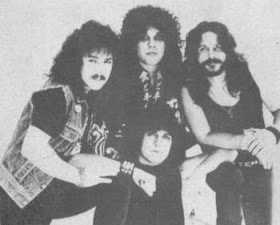
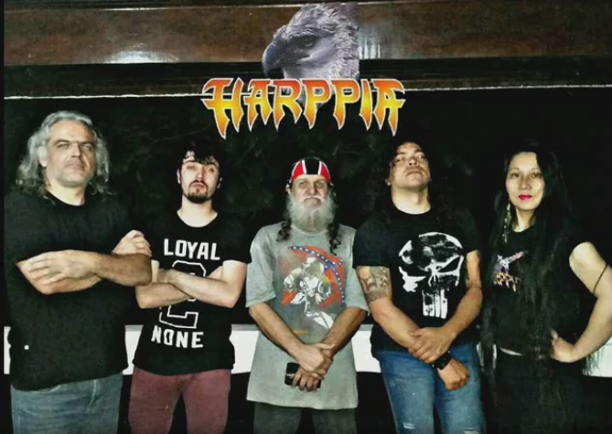
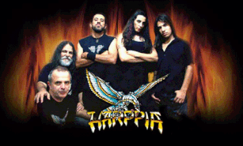

Sobre a Banda
A Harppia é uma banda brasileira de Heavy Metal formada nos anos 80 na cidade de São Paulo. Conhecida por suas letras que abordam temas mitológicos e históricos, a banda conquistou uma legião de fãs ao longo dos últimos 40 anos de jornada ininterrúpta e hoje além de ser um dos símbolos do heavy Metal no Brasil, também é um verdadeiro registro histórico de como se construiu o rock no nosso país.
Discografia
Caso tenha se interessado pelos discos da banda: Saiba Mais


Integrantes
Caso tenha se interessado pela história dos integrantes da banda: Saiba Mais


História
A Harppia é uma das bandas mais importantes e pioneiras do heavy metal brasileiro, formada em São Paulo em 1982. Inicialmente chamada Via Láctea, adotou o nome Harppia em 1983, inspirado na poderosa ave de rapina Harpia harpyja. O grupo ganhou destaque nacional com o lançamento do EP A Ferro e Fogo (1985), considerado um marco do metal no Brasil, especialmente pela clássica faixa “Salém (A Cidade das Bruxas)”.
Nos anos seguintes, lançou o álbum Sete (1987) e consolidou sua reputação com apresentações marcantes, influenciando diversas bandas da cena metal. Após um período de mudanças e pausas, retornou nos anos 1990 com Harppia’s Flight (1996), e manteve-se ativa com novos trabalhos, como 3.6.9 H.A.A.R.P. (2017) e Caixa de Pandora (2023), comemorando 40 anos de estrada.
Com sua mistura de peso, técnica e letras em português, a Harppia se tornou um símbolo de resistência e autenticidade no metal nacional, permanecendo relevante e ativa até hoje.
